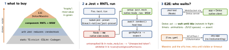

react-native · folio
In one line: Buy confidence per second: TS strict for free, Jest for logic, the
bulk in RNTL component tests that query like a user against mocked
network, and a few E2E journeys — Detox (grey-box) or Maestro (black-box).
Download PDF Print view LaTeX source


The tools
- Jest runs in Node: the preset (
@react-native/jest-presetsince 0.85) stubs core native bits; every third-party native module isjest.mocked (many ship a mock, e.g.react-native-gesture-handler/jestSetup). Fake timers:jest.useFakeTimers()+advanceTimersByTime. - RNTL renders the React tree (no pixels, no layout), queries host elements:
ByRole('button',{name})>ByLabelText>ByText>ByTestId(last resort). Role needs an accessible element — tests force real a11y.getBythrows ·queryBy→ null (absence) ·findBy= async wait. - RNTL 14 (React 19 only):
render,renderHook,fireEvent,actare async —awaitthem (codemodrntl-v14-async-functions).fireEvent.pressjust calls the nearestonPress;userEventreplays pressIn/Out, focus, per-keychangeText, blur, and respects disabled /editable={false}. - Hooks:
await renderHook(fn, {wrapper})→result.current; or test through the component. - Network: MSW
setupServer(msw/node) — real client + parsing, per-testserver.use()for errors. Cheaper seam: mock the API module. TanStack Query: newQueryClientper test,retry:false. - Navigation: real
NavigationContainer+ navigator (integration), or mockuseNavigationand assertnavigate(unit). TurboModule: mock itsNative<X>.tsspec file. - Detox (Wix): instrumented build,
by.id(testID), no sleeps; costs native builds + upgrade breakage; a never-idle app (looping animation, polling) hangs it. - Maestro: YAML (
tapOn,assertVisible), no app changes, also native/Flutter; slower, fuzzier waits.
Example — a user-level test
it('shows the error, then retries', async () => {
server.use(http.get('/me', () => HttpResponse.error()));
const user = userEvent.setup();
await render(<Profile />, { wrapper: Providers }); // RNTL 14
expect(await screen.findByText(/could not load/i))
.toBeOnTheScreen();
server.resetHandlers(); // next call succeeds
await user.press(screen.getByRole('button', { name: 'Retry' }));
expect(await screen.findByText('Ada')).toBeOnTheScreen();
});TypeScript for RN
type Load<T> = { status: 'idle' } | { status: 'loading' }
| { status: 'ok'; data: T } | { status: 'err'; error: Error };
type Props = PressableProps & { title: string;
style?: StyleProp<ViewStyle>; children?: React.ReactNode };
function List<T>(p: { items: readonly T[];
key: (t: T) => string; row: (t: T) => React.ReactElement }) {}
type Root = { Home: undefined; Profile: { userId: string } };
type P = NativeStackScreenProps<Root, 'Profile'>;
const gap = { s: 4, m: 8 } satisfies Record<string, number>;// NativeCrypto.ts -- Codegen reads this spec
export interface Spec extends TurboModule {
hash(input: string): Promise<string>; }
export default
TurboModuleRegistry.getEnforcing<Spec>('NativeCrypto');- Unions: no loading + error at once;
const x: never = sin thedefault= exhaustive. - Skip
React.FC(implicitchildrendropped in React 18 types); extend host props viaComponentProps<typeof X>. satisfies(TS 4.9) checks without widening — literals and keys stay precise;asjust silences the checker.- Nav: global
ReactNavigation.RootParamListtypesuseNavigation(); deep-link params arrive as strings — validate. - Flags:
strict,noUncheckedIndexedAccess(arr[i]:T|undefined),exactOptionalPropertyTypes. - Codegen:
Native<Name>.ts+codegenConfig(package.json) → C++/ObjC++/Java glue: the TS is the ABI, in a subset (number,Int32, string, boolean, objects, arrays, Promise, callbacks).
Traps
- Types vanish at runtime:
res.json() as Useris a lie — validate at the boundary (zod/valibot) or type itunknown. - Flakes: un-awaited
findBy/userEvent; real timers; leaked state (singletons, shared QueryClient); live network; E2E permission dialogs. - “not wrapped in act(...)” = an update you didn’t wait for:
findBy, not moreact. - Whole-screen snapshots = change detectors; asserting state or child internals tests the implementation.
- Jest green ≠ works: no native code, layout or threads ran.
Remember
Query like a user · mock at the edge · wait, don’t sleep · type the boundary.